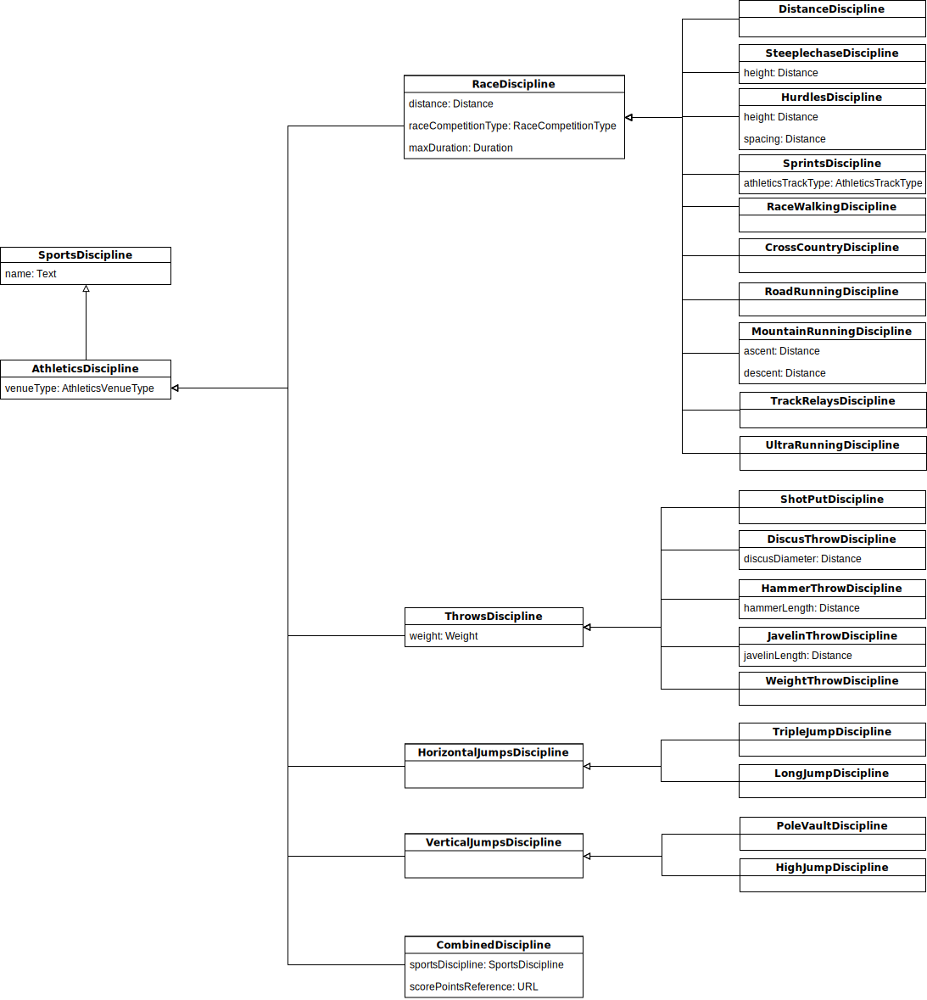

This specification, developed by the W3C OpenTrack Community Group, introduces a data model to support the publication of Athletics data on the Web. This document is based
on the OpenTrack Abstract Data Model that defines the main concepts and relations of Athletics competitions, including events schedule, competitors and other stakeholders, enabling a common
representation of information in this sector.
This OpenTrack vocabulary proposes an extension of Schema.org [[SCHEMA-ORG]], producing a lightweight schema to identify, expose and process Athletics data on the Web.
This Schema.org extension takes into account its current version, and continuing with the work done previously by the specific Sports Schema.org task force.
This vocabulary is in process of development.
Introduction
This proposal is based on the conceptual model for OpenTrack. As described in the charter of the Community Group, this model describes
data related to Athletics competitions including: Track and Field; Road Running; Race Walking; Cross-Country Running; Mountain Running; and trail Running disciplines.
This model is focus on Athletics competitions, having into account: events; athletes and teams; results; performances; management of start lists; results; and facilities.
This document specifies a lightweight schema, based on Schema.org [[SCHEMA-ORG]] to represent the main concepts and relations about sports competitions, athletes, and other stakeholders as a common representation of
information in this realm.
With the objective of a wide use of this model, the schema is very flexible and all examples are expressed in JSON-LD format. Along with the vocabulary, there is a specific JSON-LD context that will ease the adoption of the
vocabulary, even for those who don not have deep knowledge of the Semantic Web.
No section should be considered final, and the absence of any content does not imply that such content is out of scope, or may not appear in the future. If you feel something should be covered, please
tell us.
Structure of this document
This specification is divided into two main sections:
Introduction - this introductory part;
How to - How to use the model and describe resources using OpenTrack and JSON-LD;
Concepts - describes the key entities and their attributes, including the concrete data model;
Classification Schemas - lists of taxonomies and value schemas related to Athletics.
Background
OpenTrack descriptions need homogeneous classes, properties and data types to specify values of properties. This work is based on existing requirements, and the rules set up by
the IAAF [[IAAF-RULES]] and by WMA [[WMA-RULES]]. The core vocabulary is Schema.org [[SCHEMA-ORG]].
This specification makes use of the compact IRI Syntax; please refer to the Compact IRIs from [[JSON-LD]].
This specification makes use of the following namespaces:
The namespace ath is used to indicate the proposal of Schema.org extension.
Typographical Conventions
The following typographic conventions are used in this specification:
markup: Markup (elements, attributes, properties), machine processable values (string, characters, media types), property name, or a file name is in a monospace font.
definition: A definition of a term, to be used elsewhere in this or other specifications, is in bold and italics.
Notes are in light green boxes with a green left border and with a "Note" header in green. Notes are normative or informative depending on the whether they are in a normative or informative section, respectively.
Examples are in light khaki boxes, with khaki left border, and with a
numbered "Example" header in khaki. Examples are always informative.
The content of the example is in monospace font and may be syntax colored.
How to use OpenTrack with JSON-LD
With the objective of a wide use of this model, the schema is very flexible and all examples will be expressed in [[JSON-LD]] format. Along with the vocabulary, there is a specific [[JSON-LD]] context that will ease the
adoption of the vocabulary, even for those who don not have deep knowledge of the Semantic Web.
This section includes introductory information for those who are not familiar with the semantic technologies.
The Opentrack model is expressed under the RDF paradigm (a graph-oriented representation), so there is more than one format to represent (serialize) the graph of information: RDF/XML,
turtle, RDFa, etc. Examples will be represented in JSON-LD, a JSON-based syntax easy to adopt.
In order to ease the adoption of this set of technologies, this document includes several recipes to help developers publish and reuse Athletics information through these mechanisms.
Terminology
JSON-LD. JSON-LD is a lightweight Linked Data format. It is easy for humans to read and write. It is based on the already successful JSON format and provides a way to help JSON data interoperate at
Web-scale. JSON-LD is an ideal data format for programming environments, REST Web services, and unstructured databases such as CouchDB and MongoDB.
JSON-LD Context. In JSON-LD, a context is used to map terms, i.e., properties with associated values in an JSON document, to URLs. A term is a short word that expands to a URL. Terms may be defined
as any valid JSON string other than a JSON-LD keyword.
Linked Data. Linked Data is a way to create a network of standards-based machine interpretable data across different documents and Web sites. It allows an application to start at one piece of Linked
Data, and follow embedded links to other pieces of Linked Data that are hosted on different sites across the Web.
IRI (Internationalized Resource Identifier). An IRI is something like a unique web address (http://example.org/resource001) that serves for identifying
resources.
There are there keywords that should be always included in our documents: @context, @type and @id. The rest of the properties are optional.
In case a property value is unknown, the pair key:value will be omitted.
@context
RDF resources (concepts, classes, properties, etc.) are identified by IRIs. For instance, the property name used in the example above is identified by http://schema.org/name. JSON-LD
contexts define keys used within the document can have unambigious meaning, as they bind to the IRIs which describe their meaning.
we indicate the context of the document, that is defined in the linked document. So we can use the keys of the context as a simplification for
the representation.
@type
@type indicates the class of the resource being described. In this example, the resource is an Athlete (the context maps Athlete to the IRI
http://purl.org/athletics#Athlete, but we don't care about this now).
We should include always the type to the object we are describing.
In case the resource would have more than a type, several types may be specified within an array:
"@type" : [ "Athlete", "Coach" ]
@id
@id is used to uniquely identify entities or resources through IRIs.
When dereferencing an entity related via a URL, the location should provide a representation of that entity.
This example describes an Athlete that is identified as
http://w3c.github.io/opentrack-cg/examples/athlete/001Farah.jsonld. The web address will provide information about the entity (the
same that is being described in the example). Having these identifiers we will be able to refer this entity from other entity descriptions or documents.
Using this mechanism, we can enrich descriptions just linking our descriptions with other IRIs that already identify resources. For instance, the athlete is affiliated to a club:
There may be exceptions of JSON-LD objects that do not have @ids associated. We should avoid this case unless we are sure the object defined is useful only in the context of the current
description (i.e., no reusable in future descriptions).
Property values
Properties that describe resources may have values of different nature:
Literals
Some properties only may have Literals as value:
Texts:
"alternateName" : "Mo Farah"
Dates:
"birthDate" : "1983-04-23"
Integers:
"age" : 25
Predefined Values (enumerations)
Some properties may have Enumerations as value:
For instance, gender should only take one possible value (either Male or Female).
"gender" : "Male"
In this case, the potential values are expressed in the context as aliases, so we can use Male instead of http://schema.org/Male.
Objects
As shown above, a resource identified by an IRI may be used as value of a property.
In case the resource is already identified (and described) we can link it directly:
String properties may include information about its language, so we can include several representations of the same information in different languages.
The property will include information about the textual information using a complex object with two keys: @value and @language. @value contains the string, and
@language the tag identifying the language (using Lenguage Tags).
All JSON-LD objects should have a @type explicitly indicating the class of the resource. The Opentrack vocabulary includes several classes that can be used, but also other external vocabularies may be used.
Classes may be described hierarchically to express differences in the model.
Overview of the model
The model is related to the competition management in Athletics. By using this model systems will be able to describe, collect, process, store and publish Athletics information.
In order to represent properly the model, the work was divided in two main parts:
Competition Calendar. High-level representation of competitions, seen as sports events for competitors and the public in general.
Competitors, athletes and organizations that take part in the competition.
Competition Calendar
High-Level Competition Model
All the types and properties included in the diagram exists in Schema.org. The new ones are represented in bold red.
Sports Competitions are organized occasions where sports events are planed and take place at a specific location during a period of time. Most Athletics events are part of a bigger meeting, or competition (sub events
and super events). These competitions can be organized periodically (Competition Series), such as the Summer Olympic Games. These events may have of different nature, depending on
the disciplines, schedule, competitors, and scope (e.g., championships tournaments, leagues, fund-raising road races, etc.).
A group of people who takes part in a competition as a whole, competing against other groups of people. Both athletes and teams can be affiliated to [Organizations](#organization) such as clubs, schools, university,
and/or federations.
Sports Governing Bodies in charge of governing and rule Athletics in specific territories. Athletics Federations are Sports Governing Bodies that may be attached to other higher-level federations. Athletes, Teams,
Clubs and other Organizations may be attached to Governing Bodies.
See below all the concepts and their attributes explained in detail, including the specific class and properties that serve to describe Athletics resources. Concepts include examples of implementation.
Concepts
Athlete
An Athlete is a Person who participates in Sports events.
Class: Athlete (ath:Athlete)
subClassOf: schema:Person
Key
Property
Description
Value Type
identifier
schema:identifier
Unique character string to identify a person as an athlete.
A Sports Team is a group of Athletes who play a particular sport or game together against other similar groups of people. In Athletics there are certain events designed for teams
competition (e.g., relay races). Teams in those competitions may be composed of Athletes affiliated to the same or different organization, representing a federation (national, regional team), or
just a joint of independent athletes.
class: Team (schema:SportsTeam)
Key
Property
Description
Value Type
identifier
schema:identifier
Unique character string to identify a team.
Text
name
schema:name
Descriptive name of a team.
Text
alternateName
schema:alternateName
An alias to name a team.
Text
image
schema:image
Picture of a team.
URL
logo
schema:logo
Logo or flag of a team.
URL
url
schema:url
Webpage URL about a team.
URL
memberOf
schema:memberOf
Organization (federation, club, school, etc.) which a team is attached to.
An Organization is a basic entity to represent a organized group of people with a particular purpose (i.e., private company, public body, association, etc.).
class: Organization (schema:Organization)
Key
Property
Description
Value Type
identifier
schema:identifier
Unique character string to identify an organization.
A Sports Club, sport club or athletics club, is an Organization for Athletes formed for the purpose of playing sports.
Clubs may have different Teams created for specific competitions, such as leagues, relay races, etc.
Class: Club (schema:SportsClub)
subClassOf: schema:Organization
Key
Property
Description
Value Type
identifier
schema:identifier
Unique character string to identify a club.
Text
name
schema:name
Descriptive name of a club.
Text
alternateName
schema:alternateName
An alias to name a club.
Text
address
schema:address
Main postal address where a club is registered or located.
A Sports Governing Body is a special type of organization in charge of governing and rule the sport of athletics. These sports governing bodies, sometimes referred as Federations, may be
attached to other higher-level federations, and have other sports organizations (clubs or other governing bodies) attached to them.
Category is a division that marks the competition of athletes and teams in sports events. A category describe the potential audience of a sports event. Categories may include restrictions of
gender, age range and other specific rules depending of the sports discipline.
Examples of categories in Athletics are: M35 (Men aged 35-39), U23 (Under 23) Men, or ad hoc categories for non-official competitions such as teachers and parents in school
sports. There is a predefined list of standard categories recognized by international federations.
A date of reference in the current year used to calculate the permitted age in a category (i.e., IAAF categories take the 31st December of the current year as reference). Values of this property must be
represented in truncated ISO8601 notation, specifying only month and day (e.g., Dec 31: --1231).
{
"@context": "http://w3c.github.io/opentrack-cg/contexts/opentrack.jsonld",
"@id" : "http://w3c.github.io/opentrack-cg/examples/category/SENF.jsonld",
"@type": "Category",
"name": "Senior (Female)",
"description": "Open class with no upper age limit but some limitations on younger people competing in endurance events. Female gender.",
"requiredMinAge" : 16,
"requiredGender" : "Female",
"recognizingAuthority" : { "@id" : "http://w3c.github.io/opentrack-cg/examples/federation/IAAF.jsonld" }
}
Competition Registration
Competition Registration is the action of applying to the competition organizers for taking part in the competition.
class: RegisterAction (schema:RegisterAction)
Key
Property
Description
Value Type
description
schema:description
Description of the potential action of registration.
A Competition, Athletics Competition or Sports Competition is an event in which Athletes or Teams take part in order to find out who is best at a particular
sports activity.
Athletics Competitions may be of different nature, depending on disciplines (e.g., 100m, marathon, pole vault, etc.), schedule (e.g. one-day meetings, World championships, etc.), competitors
(e.g., U23, Masters, etc.), and scope (e.g., regional, national, supranational championships, leagues, etc.). Other amateur competitions such as fund-raising road races or school races are also considered as
Competitions.
class: Competition (ath:SportsCompetitionEvent)
subClassOf: schema:SportsEvent
Key
Property
Description
Value Type
identifier
schema:identifier
Unique character string to identify a competition.
Text
name
schema:name
Descriptive name of a competition.
Text
alternateName
schema:alternateName
An alias to name the competition. It could be an acronym or abbreviation.
Text
description
schema:description
Descriptive text about a competition.
Text
location
schema:location
Venue where a competition is held (for instance, Berlin Olympic Stadium).
List with the results of the participation in a competition. There may be different results during the competition (start list, intermediate results, partial results, final results, etc.) .
Results
competitionRegistration
schema:potentialAction
Potential action of athletes' sign up to take part in the competition.
{
"@context": "http://w3c.github.io/opentrack-cg/contexts/opentrack.jsonld",
"@id" : "http://w3c.github.io/opentrack-cg/examples/competition/EuropeanChampionships.jsonld",
"@type": "CompetitionSeries",
"name": "European Athletics Championships",
"description": "The European Athletics Championships is a recurring event organized by European Athletics, that is held every two years. This championship gathers together the best athletes and national teams in Europe.",
"organizer": { "@id" : "http://w3c.github.io/opentrack-cg/examples/federation/EAA.jsonld" },
"subEvent" : [
{ "@id" : "http://w3c.github.io/opentrack-cg/examples/competition/Euro2016.jsonld" },
{ "@id" : "http://w3c.github.io/opentrack-cg/examples/competition/Euro2018.jsonld" }
]
}
Place
A Place is a location, venue or territories where events are held or organizations are located. Events may take part either in stadia (e.g., track and field events at Helsinki Olympic Stadium) or outside
stadia (e.g., cross-country, mountain races, road races, etc.). Federations may cover specific Administrative Areas.
An Athletics Discipline is a particular type of Athletics event defined by specific rules.
According to IAAF, Athletics events may be classified into: Sprints, Middle/long distance, Hurdles, Road Running, Jumps,
Throws, Combined Events, Race Walks, Relays, Cross Country, Mountain Running and Ultra Running. IOC ODF [[IOC-ODF]] uses:
Races (track and road) and relays, Throws, Horizontal Jumps and Vertical Jumps. Athlib proposes codes to represent
disciplines.
Disciplines are described by specific features (i.e., throws disciplines, such as shot put, are defined by weight). So, having into account the features related to the competition, disciplines are modelled in
this taxonomy of concepts:

Athletics Discipline Taxonomy
This hierarchical taxonomy enables the definition of any type of Athletic event.
A Distance Race is a Middle-distance or Long-distance running event, over a distance longer than sprints. Range of distances includes 800 m, up to Marathon 42.195
Km.
Shot Put is a track and field event involving throwing/putting (throwing in a pushing motion) a heavy spherical object (the shot) as far as possible. The size of the ball, and the length of the wire
varies depending on the competition rules.
class: ShotPutDiscipline (ath:ShotPutDiscipline)
subClassOf: ath:ThrowsDiscipline
Discus Throw
Discus Throw is a track and field event in which an athlete throws a heavy disc (the discus) in an attempt to mark a farther distance than their competitors. The diameter and weight of the discus
varies depending on the competition rules.
Hammer Throw is a track and field event in which an athlete throws a metal ball attached by a steel wire to a grip (the hammer). The size of the ball, and the length of the wire varies depending on the
competition rules.
Javelin Throw is a track and field event where the javelin, a spear about 2.5 m (8 ft 2 in) in length, is thrown. Lenght and weight of javelin may vary depending on the rules of the competition.
Weight Throw is a track and field event usually play indoors which is equivalent to the hammer throw event, which can only be held outdoors. Ball weight may vary depending on the rules of the
competition.
Horizontal Jumps are track and field events in which athletes combine speed, strength and agility in an attempt to leap as far as possible from a take off point. Horizontal jumps include: long jump and
triple jump.
Long Jump (or broad jump) is a track and field event in which athletes combine speed, strength and agility in an attempt to leap as far as possible from a take off point.
Triple Jump (sometimes referred to as the hop, step and jump or the hop, skip and jump), is a track and field event, where competitors run down the track and perform a hop, a bound and then a jump into
the sand pit.
Vertical Jumps are track and field events in which competitors must jump or vault over a horizontal bar placed at measured heights without dislodging it.
Combined Discipline is a competition where athletes participate in a number of track and field events, earning points for their performance in each event, which adds to a total points score.
Reference to the score table used for this competition.
URL
Classification Schemas and Data Types
Most of the following definitions and values for this set of value schemas are extracted from the official Technical Competition Rules published by
IAAF.
Date
Date is represented using the ISO 8601 standard: [YYYY][MM][DD] or [YYYY]-[MM]-[DD]
For instance, 7th April 2017:
2017-04-07
Time
Time is represented using the ISO 8601 standard: [hh][mm][ss].sss or [hh]:[mm]:[ss].sss
Example, 2 hours 5 minutes 34 seconds:
02:05:34.000
Example, 10 seconds, 345 milliseconds:
00:00:10.345
High Resolution Time
Milliseconds should be enough to represent all time measurements in Athletics according to IAAF's rules [[IAAF-RULES]]. In the case of timing systems capturing higher resolution of time, values must be
represented as quantified values using the Space and Time Units Vocabulary [[QUDT-SPACETIME]]. Editors may indicate the magnitude as a numeric value and the kind of the quantity (unit). Any unit of measurement may be
used (hour, second, millisecond, etc.), but it is recommended using the 'second' (s), as it is the base unit of time in the International System of Units (SI).
DateTime is represented using the ISO 8601 standard: <date>T<time>
Time can include the timezone <time>±[hh]:[mm].
For instance, 7th April 2017 at 4:45 am (UTC+1):
2017-04-07T04:45:00.000+01:00
Distance
Distances and heights must be represented by a quantified value, expressing the magnitude and kind of a quantity (unit). Values will be expressed as a numeric value (decimal or integer) and a measurement code. It is
recommended using the UN/CEFACT Common Codes [[UNECE-CODES]] for Codes for Units of Measurement used in the International Trade.
It is recommended using the 'metre' (m), as it is the base unit of time in the International System of Units (SI). Exceptionally, distance and height may be also represented using other units such as
'mile' (statute mile).
Other unit codes may be used if needed. Check and select the correspondent code from the UN/CEFACT Common Codes.
Mass
Mass must be represented by a quantified value, expressing the magnitude and kind of a quantity (unit). Values will be expressed as a numeric value (decimal or integer) and a measurement code. It is recommended using the
UN/CEFACT Common Codes [[UNECE-CODES]] for Codes for Units of Measurement used in the International Trade.
It is recommended using the 'kilogram' (kg), as it is the base unit of mass in the International System of Units (SI).
Other unit codes may be used if needed. Check and select the correspondent code from the UN/CEFACT Common Codes.
Gender Type
Enumeration of genders with two values:
Code
Gender Type
Male
Men and/or boys.
Female
Women and/or girls.
Competition Feature Type
According to IAAF Rule 132.4, there are official standard abbreviations and symbols used in the preparation of start lists and results.
Code
Issue/feature
DNS
Did Not Start
DNF
Did Not Finish
DQ
Disqualified
R
Retired from competition
Q
Qualified by place (track) or standard (field)
q
Qualified by performance (time in timed events and rank in field events)
qR
Advanced to next round by Referee
qJ
Advanced to next round by Jury of Appeal
>
Bent knee (Race walking)
~
Loss of contact (Race walking)
yC
yellow Card
yRC
Second yellow Card
RC
Red Card
Fn
False Start
o
Clearance (valid trial in Height Events)
-
Pass (passed trial in field events)
x
Failure (failed trial in field events)
NM
No Mark
NH
No Height
h
Hand-timing
a
Automatic timing with no hundredths of a second measured
A
Performance achieved at altitude
OT
Oversized Track
Category Type
Standard categories are combinations of gender and age-range. The following predefined categories are recognized by IAAF, European Athletics and/or WMA:
Age Range
Mixed
Male
Female
16—17
category:U18
category:U18M
category:U18F
18—19
category:U20
category:U20M
category:U20F
20—22
category:U23
category:U23M
category:U23F
23—34
category:SEN
category:SENM
category:SENF
35—39
category:V35
category:M35
category:W35
40—44
category:V40
category:M40
category:W40
45—49
category:V45
category:M45
category:W45
50—54
category:V50
category:M50
category:W50
55—59
category:V55
category:M55
category:W55
60—64
category:V60
category:M60
category:W60
65—69
category:V65
category:M65
category:W65
70—74
category:V70
category:M70
category:W70
75—79
category:V75
category:M75
category:W75
80—84
category:V80
category:M80
category:W80
85—89
category:V85
category:M85
category:W85
90—94
category:V90
category:M90
category:W90
95—99
category:V95
category:M95
category:W95
100+
category:V100
category:M100
category:W100
Country
Each country should be represented by an IRI that includes a unique three-character Authority code. It is recommended using the EU
Named Authority List (NAL) of Countries, that relays on the
ISO 3166-1/alpha-3 positions in case the country is present in the ISO standard. A traceability of this codes creation is ensured and historical relationships are
also offered.
The IRI scheme of countries is http://publications.europa.eu/resource/authority/country/{countrycode}. The JSON-LD context enables a countrycode prefix to simplify usage, allowing the use of the
following form:
countrycode:{countrycode}
For instance: countrycode:ZWE for Zimbabwe, countrycode:ZAF for South Africa and countrycode:TGO for Togo.
If we need to represent a supranational spatial coverage (for instance, when defining the areaServed of organisations), it is recommended using the EU
Named Authority List (NAL) of Continents. These are be represented in a similar way than countries.
The IRI scheme of continents is http://publications.europa.eu/resource/authority/continent/{continentcode}. The JSON-LD context enables a continent prefix to simplify usage, allowing the use of
the following form:
continent:{continentcode}
Examples: continent:AFRICA for Africa, continent:AMERICA for America, continent:ANTARCTICA for Antarctica, continent:ASIA for Asia,
continent:EUROPE for Europe and continent:OCEANIA for Oceania.
Competition Status
Status of a competition.
Code
Status
schema:EventScheduled
Competition is scheduled.
schema:EventPostponed
Competition will be postponed without being rescheduled yet.
schema:EventRescheduled
Competition is rescheduled.
schema:EventCancelled
Competition will not take place (suspended, cancelled, discarded in SportsML)
Record or Best Type
Types of record of best achieved by competitors in competitions.
Code
Record Type
WR
World Record
=WR
Equal World Record
PR
Paralympic Record
AF
African Record
=AF
Equal African Record
AS
Asian Record
=AS
Equal Asian Record
ER
European Record
=ER
Equal European Record
AM
American Record
=AM
Equal American Record
OC
Oceania Record
=OC
Equal Oceania Record
AR
Area (or continental) Record
=AR
Equal Area (or continental) Record
NR
National Record (for a specific country)
=NR
Equal National Record
RR
Regional Record
=RR
Equal Regional Record
OR
Olympic Record
=OR
Equal Olympic Record
CR
Championship Record
=CR
Equal Championship Record
GR
Games Record
=GR
Equal Games Record
MR
Meet Record
=MR
Equal Meet Record
DLR
Diamond League Record
=DLR
Equal Diamond League Record
#
indicates a record has not been accepted. The same mark is also used to indicate some sort of irregularity with a result.
X
indicates the athlete has been disqualified after the performance
ClubR
Club Record
Records can be described by the type of record and the age-range category.
Code
Record Type
AJR
Area (or continental) Junior Record
=AJR
Equal Area (or continental) Junior Record
EUR
European U23 Record
=EUR
Equal European U23 Record
WJR
World Junior Record
=WJR
Equal World Junior Record
EJR
European Junior Record
=EJR
Equal European Junior Record
NUR
National U23 Record
=NUR
Equal National U23 Record
NJR
National Junior Record
=NJR
Equal National Junior Record
The concept of 'best' refers to athlete's personal achievements, without setting official records.
Code
Best Type
WYB
World Youth Best (the best mark achieved by an athlete in the youth age category)
=WYB
Equal World Youth Best
WB
World Best (the best mark recorded for a non-IAAF world record event)
=WB
Equal World Best
PB
Personal Best (the best mark achieved by an athlete on a personal level)
=PB
Equal Personal Best
SB
Seasonal Best (the best mark achieved by an athlete on a personal level within a given season)
=SB
Equal Seasonal Best
WL
World Leader (the best mark achieved worldwide within a given season)
=WL
Equal World Lead
EL
European Lead
=EL
Equal European Lead
EB
European Best
=EB
Equal European Best
CB
Championship Best Performance
=CB
Equal Championship Best Performance
Results Status
Possible status types for results within a competition.
Code
Status
results:startList
Before competition, Start List
results:live
For live updates during competition
results:intermediate
When competition is stopped, used at pre-defined points
results:unconfirmed
When the unit is over but not yet unofficial or official. Only used if other statuses do not come quickly.
results:unofficial
Results of the competition released as soon as the event is over, not waiting any official decision of the International Federation. The correctness of data must be assured.
results:official
Results of the competition released as soon as the event is officially confirmed taking into account the resolution of the protests, etc.
results:partial
Incomplete list, Final Ranking.
results:protested
After the competition is no longer LIVE and a protest has been lodged.
Protest Status
Status of a protest process in a competition.
Code
Status
protest:CLS
Closed
protest:OPN
Open
protest:PND
Pending
protest:ROPN
Re Open
Competition Type
Type of competition in races, defined by the way of how competitors take part in the competition (against the clock, relays or individual).
Code
Type
race:IndividualCompetition
Individual Competition
race:RelayCompetition
Relay Competition
race:TimeTrialCompetition
Time Trial Competition
Multiple types can be specified (e.g., relays time trial races).
Venue Type
Type of stadium, track and/or field where a competition take places.
Code
Type
venue:VenueIndoor
Indoor venue
venue:VenueOutdoor
Outdoor venue
Wind Speed
Like distance, wind speed must be represented by a quantified value, expressing the magnitude and kind of a quantity (unit). Values will be expressed as a numeric value (decimal or integer) and a measurement code. It is
recommended using the UN/CEFACT Common Codes [[UNECE-CODES]] for Codes for Units of Measurement used in the International Trade. Typically, in Athletics wind speed assistance is represented in
metres per second (m/s), recognized by the International System of Units (SI).